Overview
The MOOC Factory is a USPC service dedicated to translate valuable academic courses into online MOOCs. MOOC standing for Massive Open Online Courses, an emerging, popular way to provide elearning training contents to cohorts of participants across the Francophonie and around the globe.
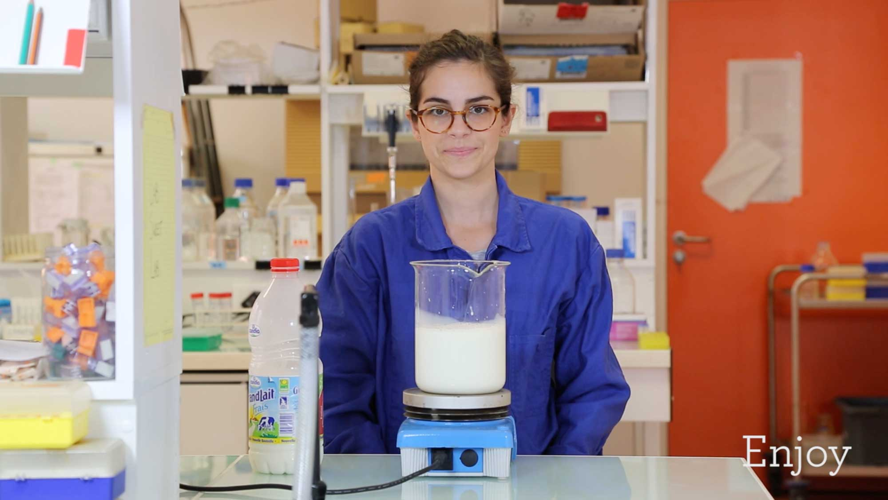
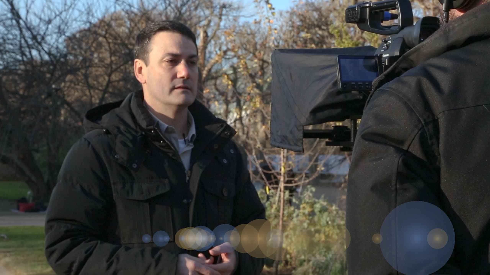
Services
Introduction to MOOCs
We provide a 1~2 hours presentation on "What is a MOOC? How to make my MOOC?", so you can swiftly know what you are going into. We also provide a kickstarter toolkit so you can try as soon as you wish to. This real life introductive session with your teaching team includes :
- a 30mins, swift, general presentation about MOOCs
- 15 mins presentation of the MOOC factory, how we can help you
- 20mins Q&A session
- 40mins learning by doing, on our local OpenEdX sandbox
Designing your online course
Design an online course impose new possibilites and limits. We help you to conceive your online courses, to break it down into relevant sections, mediums, and quizzes.
Filming, we help too !
The MOOC factories include a video studio with all the tools and know how so to create elegants and engaging videos contents. We do :
- guide you to write your scenario
- choice a spot to film
- bring professional camera there the D-days
- suitable filming with best practices
Production with video editing, audio, and 3D
Professional movie editing is a key element to add value and quality to your online course. We push this step to state of the art level common in the industry. We do :
- video editing
- audio enhancement
- visual integration
- 3D creation and integration
Online support
Once all your textual, visual, and video materials are ready, the MOOC factory helps you to put this set online, on OpenEdX or other LMS. We either manage these for you and/or train you to maintain your MOOC sharp and clean, so your participants enjoy it fully.
Community management
While we don't have academic expertise in your field, we do have expertise in OpenEdX and community management. Also, together with some people of your team, we can help and/or train you to manage to manage your community for the weeks your MOOC is open.
Support & Elegance
Leading projects
Over the course of one year and half, the MOOC produced by the MOOC factory have reached an audience of over 15000 MOOC participants. The "Savanturiers : Neurosciences at elementary school" (8000) and "Savanturiers : Climatology at elementary school" (2000), "The Origines of Life" (+4000) being the MOOC with the biggest impacts so far. Other MOOCs met smaller public, while yet other are currently under conception.
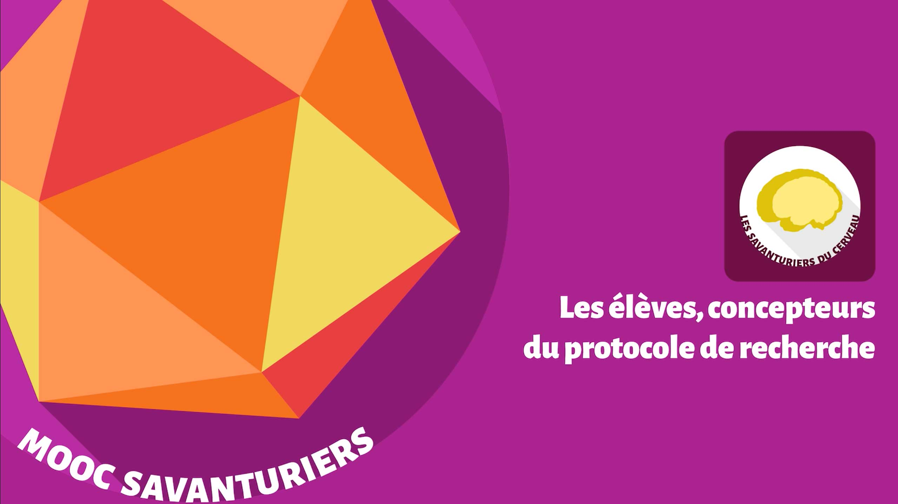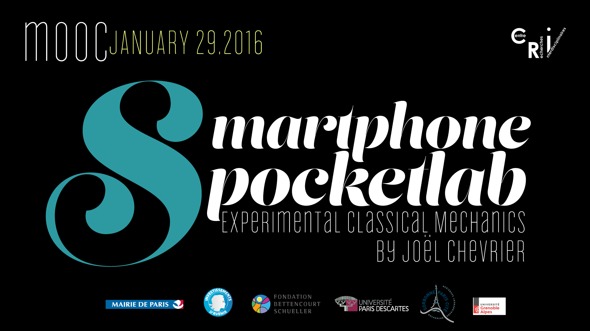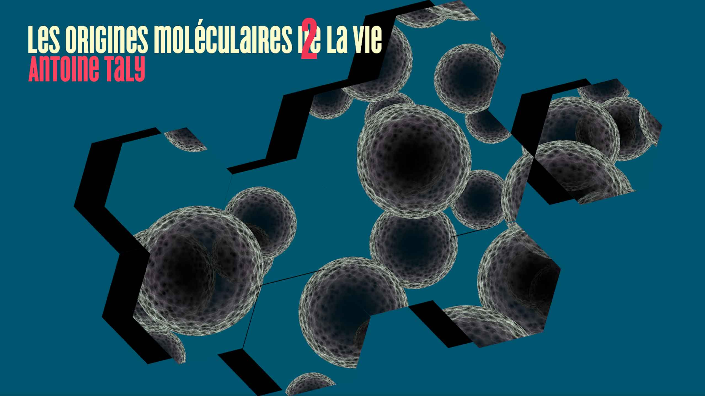
Goals
Educational
Our goals are science outreach in synthetic biology and to design game challenges that stimulate scientific creativity and interest.Research
Generate a community of players interested in the field and encourage them to:
- Collect devices to unlock new abilities ;
- Chose the appropriate bacterial abilities to solve the main challenges.
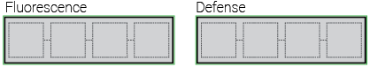
Team & Development
Team
The MOOCfactory's action is currently powered by a coordinator, a film maker, and an educational platform engineer.
Spirit
We are deeply dedicated to scaling up the best courses out there into Massive Open Online Courses. As much as possible, we publish all our contents under open licences such as the now famous Creative Commons License (CC-by-sa-4.0+) so others teaching actors can freely refactor these materials as they like.
Our long-term objective is to provide solid and freely available teaching materials for students around the globe.
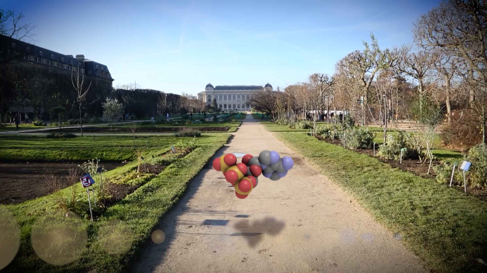
Contactez-nous !
Obtenez du support pour créer votre MOOC.
\ Nous vous accompagnons pour concevoir votre projet, filmer vos vidéos, jusqu'à la mise en ligne des contenus et la tenue de votre cours. Get support to create your MOOC.
\ We help you to kickstart your project, keep on rails, film your videos, upload them on OpenEdX or other online LMS.
\ Nous vous accompagnons pour concevoir votre projet, filmer vos vidéos, jusqu'à la mise en ligne des contenus et la tenue de votre cours. Get support to create your MOOC.
\ We help you to kickstart your project, keep on rails, film your videos, upload them on OpenEdX or other online LMS.
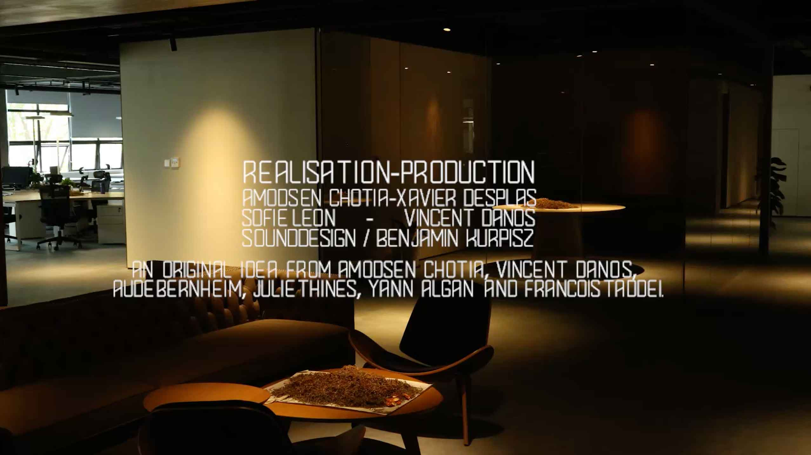
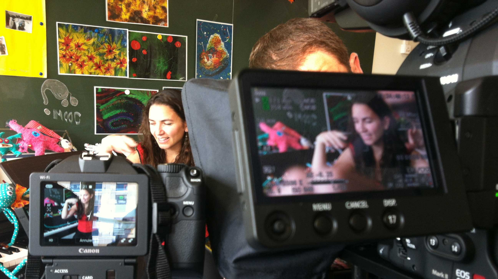
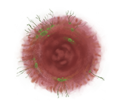
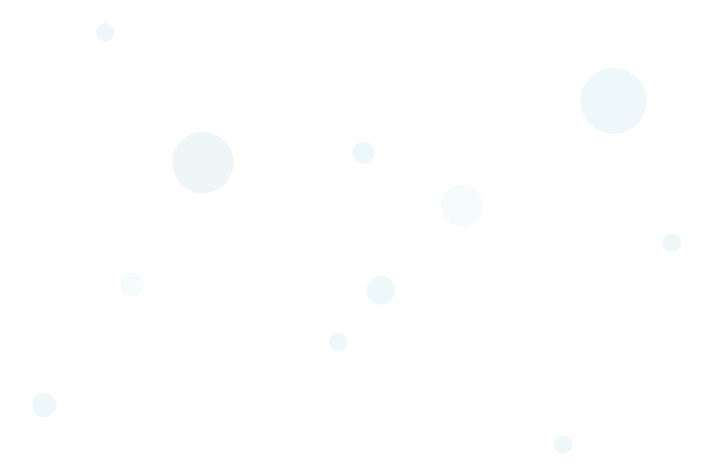